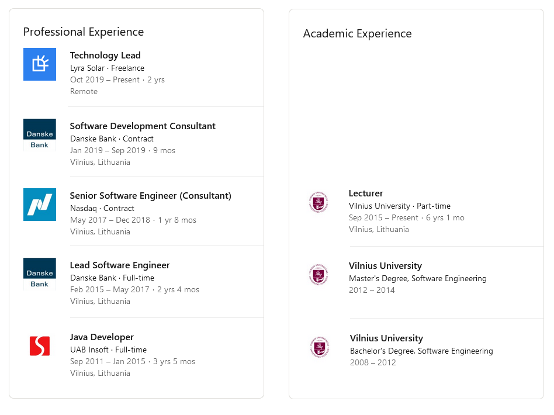

class: center, middle, main-title # Software Engineering Course overview | Introduction --- ## The basics - Course language: English -- - Course format: online -- - Recordings and slides will be available -- - Questions, comments, feedback - all welcome ??? - Demo: MS teams - Icebreaker: https://jamboard.google.com/d/1qSLAlE6x9yAb8EJyWF_HrDgvm0WpmAt27OFnkhj5Jjk/edit?usp=sharing - How do you feel about remote? - Is English challenging? Did you have any courses in English before this one? - Interaction tools - write in chat - Start recording --- ## Goals for today - Course overview - Can describe the course at a high level - Know the structure of the grades - Know where to find information -- - Software engineering - Can explain what it is in your own words - Can name some complexities of building software --- ## Software Engineering - what is it? ??? - Software is somewhat clear (one or more program(s)) - Engineering is less clear - Activity - word cloud? What is engineering? -- This course is about **_engineering_** software. -- > ### verb: engineer > 1. to plan, build, or manage (something) by using scientific methods. > - "The system is engineered for maximum efficiency." -- > 2. to produce or plan (something) especially in a clever and skillful way. > - "a brilliantly engineered plan" > > <br>— <cite>[Merriam-Webster Dictionary](https://www.merriam-webster.com/dictionary/engineer)</cite> ??? Engineering is not science. Engineers are not a sub-category of scientists. Discovery is the essence of science. Engineers innovate solutions to real-world challenges in society. While it is true that engineering without science could be haphazard; without engineering, cientific discovery would be a merely an academic pursuit. --- ## Software Engineering - a metaphor <div style="font-size: medium; text-align: center">"Dog house" ©<a href="https://www.flickr.com/photos/83112000@N00">dbecher</a> under CC-BY-SA 2.0</div> <div style="font-size: medium; text-align: center">"Boston Downtown Skyscraper" ©<a href="https://www.flickr.com/photos/63504485@N00">ReneS</a> under CC BY 2.0</div> ??? - "Pasive house" is just a very energy efficient house - Built in a different way - more complicated than just "go and build it" - In practice SE is mostly about processes, methodologies, and tooling. -- - Building software *is not a mere matter of programming* -- - No successful software remains small and simple ??? "I'd like to add two bedrooms, a bathroom and a living room to my bike shed" --- ## Software Engineering - teaching - Primarily taught through simulation and hands-on experience ??? Pretty much all courses I've seen involve some kind of a group project. As enginering is about solving real-world problems, it makes sense to simulate that. -- - Who am I to teach? ---  ??? - I identify as a software engineer. It is a big part of my life. - But - keep in mind - I'm not smarter than you. I've just had more time to practice. - I had the priviledge of good education, coupled with 10 years of hands-on professional experience. - If it is something you want, in 10-15 years you can be company founders, managers, CTOs, lead developers, lecturers, book authors, speakers at conferences, etc. --- ## Course format: Lectures - Every week -- - Online*** -- - Discuss essential ideas and practices -- - Sometimes there will be material to read/watch before or after -- - Might have a guest speaker towards the end of the semester --- ## Course format: Projects - Whole semester -- - Work in teams to build useful software -- - Simulation of a real project -- - Should give you both technical and social challenges -- - Weekly consultations to present intermediate results, receive advice, and earn marks -- - Run slightly differently in different groups ??? - Group one (Innovative applications) will practice on their problem-based-learning project - Groups two and three will each do a single project. Next step will be choosing a project topic - until Friday! --- ## Final grade structure - 25% - Project documents - 25% - Developed system prototype - 10% - Project presentation - 40% - Exam ??? Documents - 2.5: - 0.75 + 0.25 - requirements - 0.75 + 0.25 - design document - 0.5 - project reports - The first delivery is about figuring out what needs to be done and documenting that Prototype - 2.5: - 1 Whole system + 1 team part + 0.5 individual part - 1 Whole system + 1 PSI practices + 0.5 individual part Presentation - 1: - Last week of studies. - Presenting to a jury + your colleagues. - Exact details will be clarified. Exam - 4: - Precondition for taking the exam - 1.25 from documents - In writing, possibly in person - Strictly individual - Covers both course material and your project - Not only recall the theory, but be able to reflect and apply it - Example will be provided - Best result = 4 marks, others proportionally Any questions? --- ## More practical matters - The course starts fast - Proposal: Move one lecture from end of semester to next week ??? Quick poll with reactions for yes/no. If OK, then I can propose times. --- ## Some more about Software Engineering --- <img src="../../assets/01-project-cartoon.jpg" width="90%"> <div style="font-size: medium; text-align: center">Copyright © www.projectcartoon.com under the Creative Commons Attribution 3.0 Unported License</div> ??? - Variations of this cartoon have circulated in offices since the 1960’s or 1970’s and were also called the “Tree Swing Picture”. - It is very useful as a reminder of what not to do. Sources: - https://www.smart-jokes.org/how-it-projects-really-work.html - https://medium.com/@thx2001r/the-project-cartoon-root-cause-5e82e404ec8a --- ## First definition 1968 and 1969 - [NATO Software Engineering Conferences](http://homepages.cs.ncl.ac.uk/brian.randell/NATO/Introduction.html) ??? Note: 51 years ago The motivation for these conferences was that the computer industry at large was having a great deal of trouble in producing large and complex software systems. -- > Software engineering is the establishment and use of sound engineering principles in order to obtain > **economically**, software that is **reliable**, **maintainable** and **works efficiently** on real machines. > > <br><br>— <cite>Software Engineering: A Report on a Conference Sponsored by the NATO Science Committee, NATO, 1969</cite> ??? > The phrase ‘software engineering’ was **deliberately chosen as being provocative**, > in implying the need for software manufacture to be based on the types of theoretical foundations > and practical disciplines, that are traditional in the established branches of engineering. > > <br><br>— <cite>Software Engineering: A Report on a Conference Sponsored by the NATO Science Committee, NATO, 1969</cite> Notice some hints of software problems of that time: - Expensive - Unreliable - Unmaintainable - Slow/Inefficient --- ## 50 years later... - Software is *extremely* expensive -- - Most projects are delivered over time, over budget or below functionality -- - Software is often of low quality -- Basically - We are still unable to produce or maintain high-quality software at reasonable price and on schedule --- ## Why is it hard? - There is no single "right way" to engineer software systems - The combination of constraints within a project is probably unique -- - [There is no "best practice"](https://www.satisfice.com/blog/archives/5164) -- - Scale - Both systems and organizations producing them are larger - Systems rarely exist in isolation ??? Example: - SolarDesignTool: 3-5 developers over 10-12 years - LyraSolar: 2 teams in a company in South America, a distributed core team of 4-5 backend developers, some freelancers -- - Communication - Distributed - Lack of well-understood representations of software ??? ---- Note: Lack of well-understood representations of software -- - The rate of change in the business is higher ??? Something difficult = opportunity --- class: middle, center # Questions? --- ## Next - Assignment - Watch ["Taking back ‘Software Engineering’: Craftsmanship is insufficient" talk](https://www.youtube.com/watch?v=_N_jIrEBOpw) (45 mins) -- - Next - How to keep track of what the customer needs (software requirements) - Version control system - a tool to use in all real projects - Some tools and tips for keeping track of who needs to do what by when